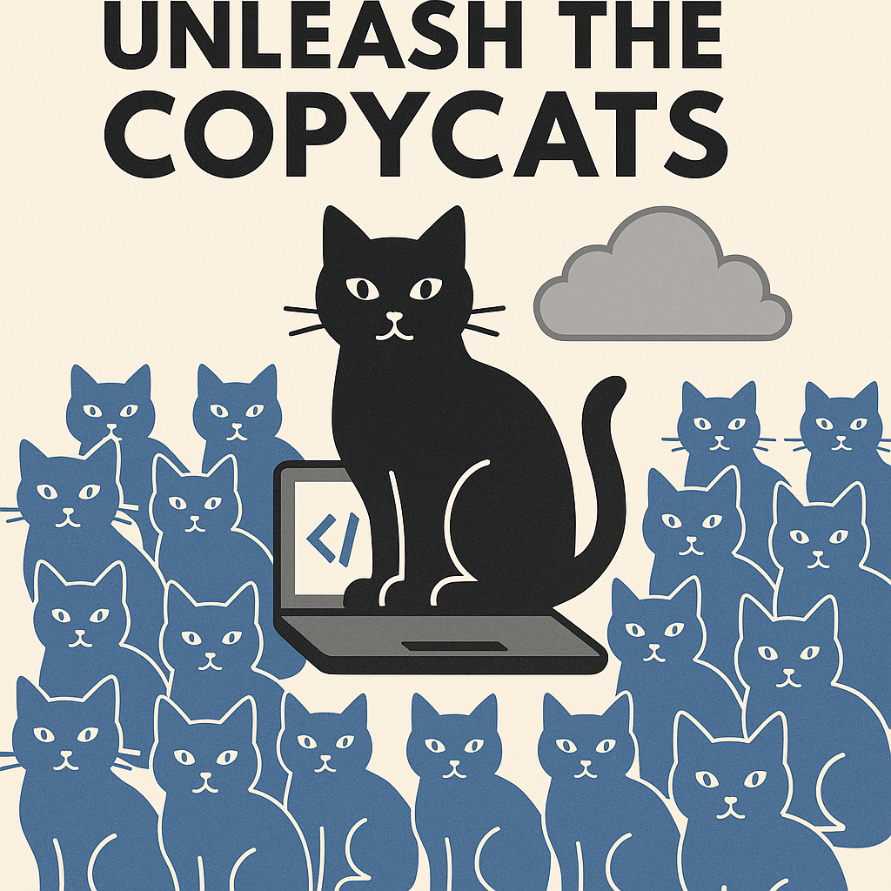

One of the most heated debates in the software engineering world today centers around Vibe Coding. Introduced by Andrej Karpathy in February 2025, vibe coding is a conversational programming style where large language models (LLMs) generate code from spoken or written prompts. Karpathy described it like this: “It’s not really coding—I just see things, say things, run things, and copy-paste things, and it mostly works.” He admits the limitations—AI often can’t debug properly, and fixing issues sometimes means poking blindly until the problem disappears. Still, for quick weekend builds, he found it “not too bad” and “quite amusing.”
Naturally, this has the software graybeards in meltdown. These are the engineers who treat their Emacs config like scripture and still debate pointer arithmetic for fun. They spent decades mastering the craft—now some kid mumbles into a mic, and GPT spits out a working app.
To them, Vibe Coding isn’t just lazy—it’s blasphemy. No data structures, no tests, no clue. Just vibes. And the worst part? It actually works. Sort of.
There will still be domains where traditional coding practices are essential, and human-written code will remain the standard. But in vertical SaaS, we’ll see a flood of copycats—replicas of major platforms built by smaller, leaner teams, all moving faster and burning less.
Unleash the Copycats

In AI Superpowers, Dr. Kai-Fu Lee describes an era of copycat companies that helped spark the rise of modern internet giants in China. During this period, the relationship between China and Silicon Valley was defined by imitation, catch-up, and eventual leapfrogging. By 2013, Chinese platforms were no longer clones of Facebook or Amazon—they had evolved into powerful, original ecosystems.
Lee highlights Shanzhai culture—a term that originally meant “mountain fortress” but evolved to symbolize China’s transformation from producing knockoffs to becoming a global leader in tech, automotive, and AI.
In the same spirit, generative AI—especially coding assistants and agents—will unleash a wave of copycat software, SaaS products, and platforms. In a market projected to grow from $315 billion in 2025 to over $1 trillion, these clones may capture a significant share—and even become a grassroots engine of innovation.
And as the copycats flood in, the bigger question becomes: who really profits from this wave?
Winners and Losers
The Abbasid caliph Harun al-Rashid once stood on the porch of his palace in Baghdad on a scorching day and watched a cloud drift across the sky. As it floated away without raining over him, he reportedly said, “Go where you will, your rain will fall on lands under my rule.”
That metaphor is fitting for today’s hyperscalers. As GenAI fuels a flood of SaaS startups—many of them clones or variations of the same idea—it’s the cloud providers who will quietly win. Whether these apps succeed, pivot, or fail, they will all pay for compute, storage, and bandwidth. AWS, Azure, and GCP don’t need to pick winners. The more crowded the arena, the more the rain falls across their empire.
But for the startups themselves, the storm is more turbulent. The sheer volume of SaaS products hitting the market will drive brutal competition. Customer acquisition costs will spike. Prices will spiral downward. Differentiation will be harder than ever. When everyone uses the same models, your edge comes down to UX polish, niche targeting, or how fast your support bot replies. Most startups will burn cash chasing growth. A few will survive. Many will quietly vanish into Product Hunt oblivion.
So while hyperscalers quietly cash in and GenAI becomes the software factory floor, the real drama will unfold among the builders—scrambling for relevance in an overcrowded bazaar of sameness.
Survival of the Fittest—or the Generalist
As the landscape shifts, it’s not just products that must evolve—it’s the engineers building them.
In a recent interview, Amjad Masad, CEO of Replit, laid out two survival paths for developers in the age of AI.
First, the specialist—someone who goes deep in AI-resistant domains like systems programming, low-level infrastructure, or embedded software. These coders work in areas where precision and reliability trump automation, and where AI still struggles.
Second, the generalist—someone who knows just enough across multiple stacks and tools, and who can harness AI to ship fast. Masad calls this the new creative class: developers who use LLMs to build full products from prompt to deployment in hours.
The rise of the generalist will reshape teams. Instead of 50-person engineering orgs meticulously designing microservices, we’ll see three-person teams launching full SaaS platforms with AI copilots, glue code, and intuition. These teams won’t just move faster—they’ll outmaneuver larger ones bogged down by bureaucracy and Slack threads.
It’s no longer just survival of the fittest. It’s survival of the fastest, the leanest, and the most AI-fluent.
Closing Thought
In the coming years, software will become less about handcrafting code and more about directing it. Builders who understand the new tooling—and the new economics—will thrive. The rest? They’ll still be arguing about tabs versus spaces while the cloud bills pile up.